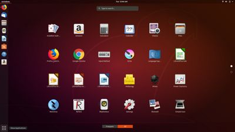

What is Linux?

In 1991 Linus Torvalds released a free operating system kernel which he called Linux. Torvalds was a believer in a free internet and so he declared his creation would be free for anyone to use and improve upon as they saw fit.
Because the Linux kernel is open and users have been able to build upon it for years, legions of highly varied Linux based systems, also klnown as distributions available today. Some distributions aim to provide a desktop experience that surpasses what is available from Windows or Apple OS, others still forgo graphical user interfaces altogether in favor of direct terminal inputs.
Since its inception, Linux has gone on to dominate the professional sector of computing needs. Servers, databases, kiosk displays and more are all powered by Linux. Because Linux is so open, professional users can adjust every minutiae of their systems to suit their exact needs. However Linux lags behind the competition in the desktop space. Since companines like Microsoft and Apple sell computers with their software installed users grow comfortable and familiar with those systems.
Switching from the familiarity of Windows or OS X can be daunting for some, but Linux is all about community which means help is always readily available.For people interested in using linux, websites like distrowatch copmile links to downloads and information on various distributions to help prospective users decide which suits them best. Furthermore most distribution websites have install guides to help first time users find their footing.